Дети
Координация, концентрация, уверенность и уважительное поведение в безопасной и доброжелательной атмосфере.
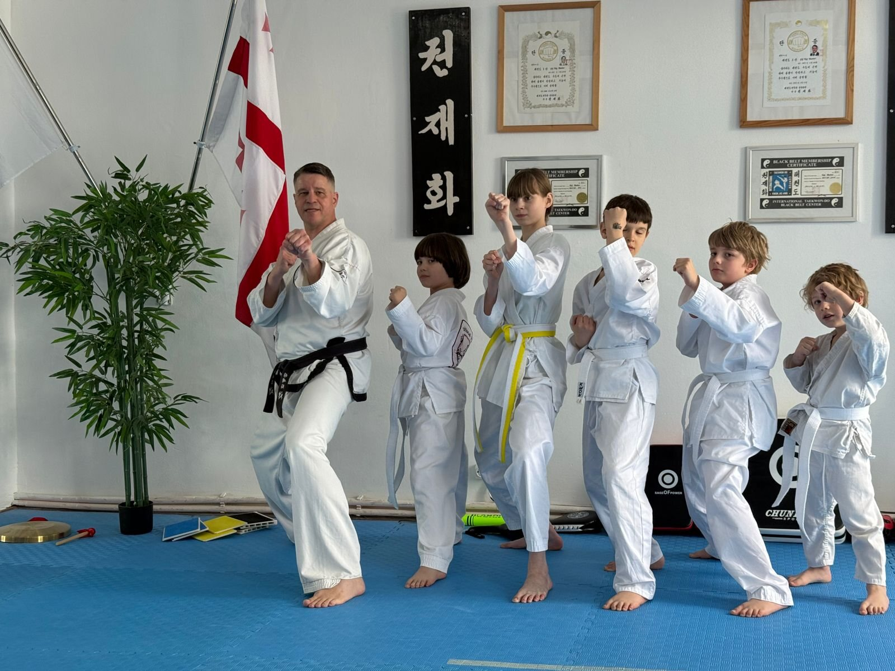
Настоящее боевое искусство в Кутаиси
Традиционное тхэквондо для детей, подростков и взрослых — уважение, чёткая структура и индивидуальное внимание.
Больше, чем удары руками и ногами
Наша школа сохраняет ценности традиционного тхэквондо: вежливость, честность, настойчивость, самообладание и несгибаемый дух. Мы рады новичкам любого возраста и уровня подготовки.
Координация, концентрация, уверенность и уважительное поведение в безопасной и доброжелательной атмосфере.
Физическая форма, дисциплина и практические навыки, укрепляющие характер в доджанге и за его пределами.
Эффективная тренировка всего тела, традиционная техника, снятие стресса и постоянное личное развитие.
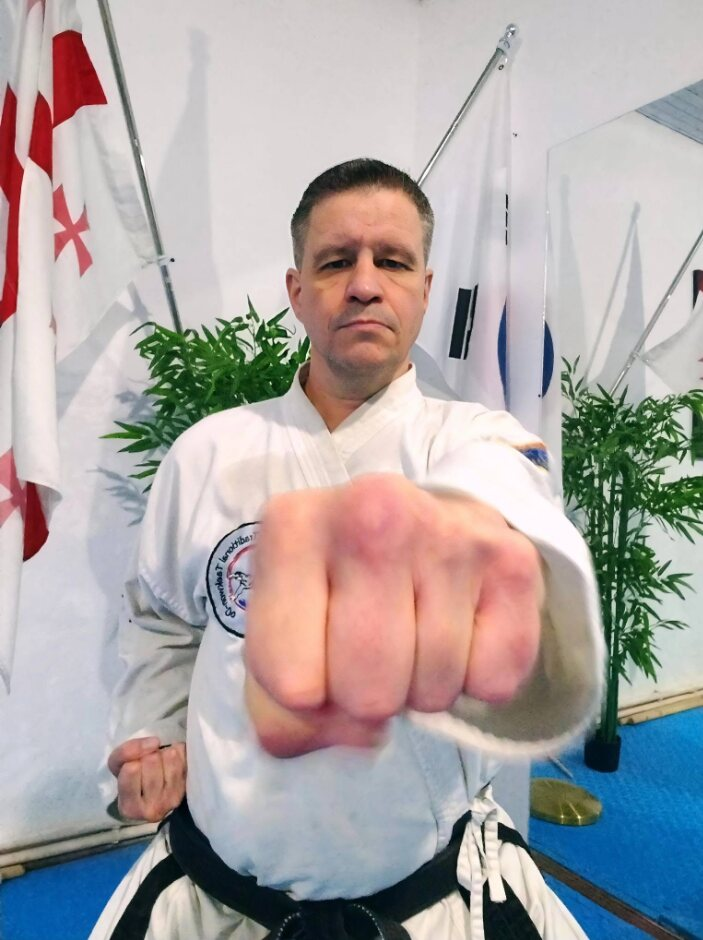
Ваш инструктор
Опыт, традиция и искреннее стремление помочь каждому ученику развиваться.
Кай преподаёт традиционное тхэквондо, уделяя особое внимание правильной технике, индивидуальному развитию и ценностям, которые наполняют боевые искусства смыслом. Каждое занятие сочетает требовательность и поддержку.
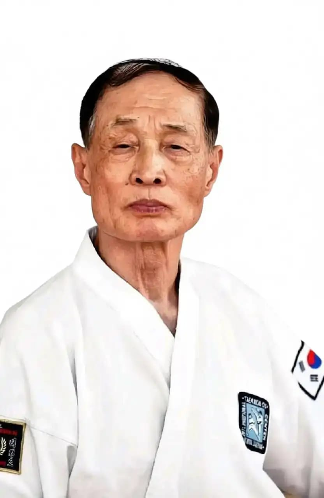
Вдохновлено учением и наследием грандмастера Квона Дже Хва.
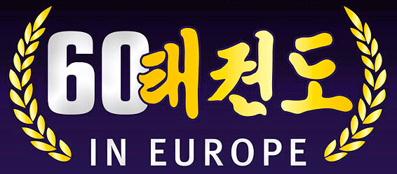
Живая европейская традиция
Мы чтим истоки, ценности и поколения, которые продолжают формировать традиционное тхэквондо.
Почему выбирают нас?
Понятные объяснения и внимание к каждому ученику.
Предыдущий опыт в боевых искусствах не требуется.
Техника и ценности преподаются как единый путь.
Тренировки с уважением, поддержкой и общей целью.
В нашем доджанге
Настоящие ученики, реальные достижения и общая любовь к традиционному тхэквондо.
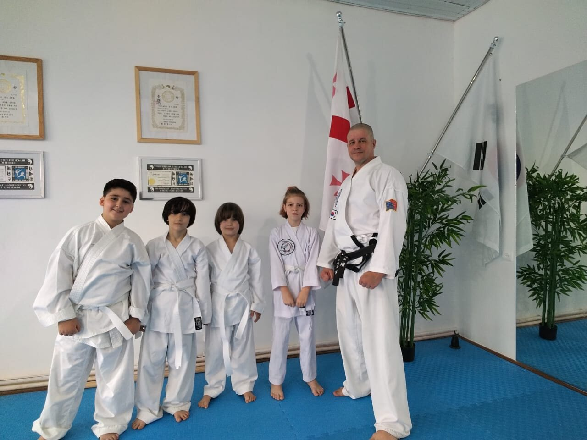
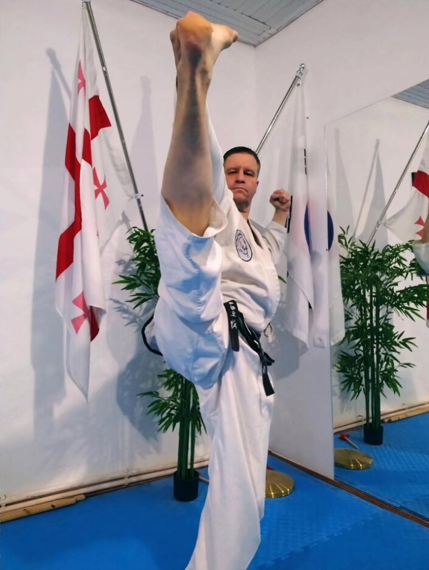
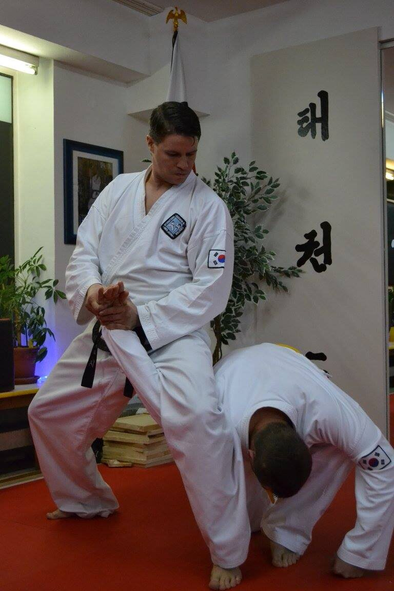
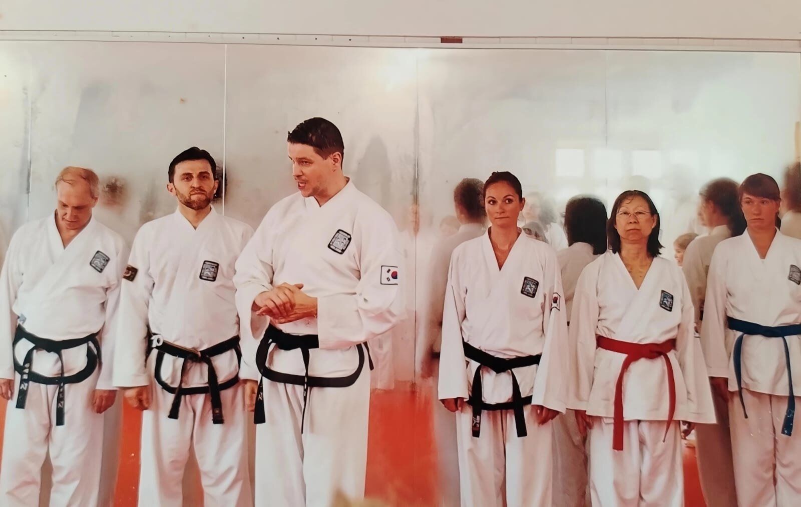
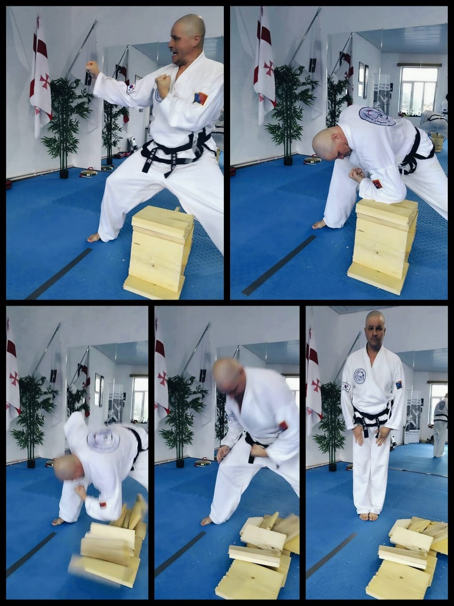
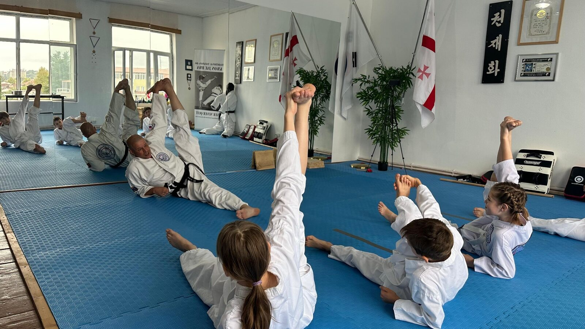
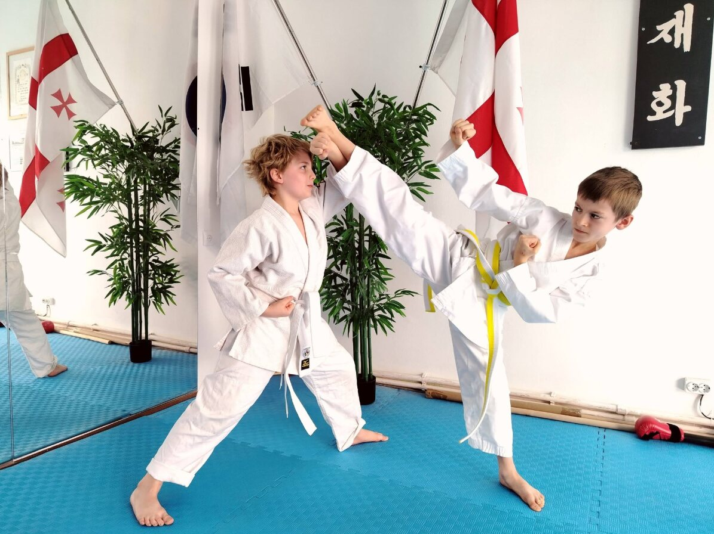
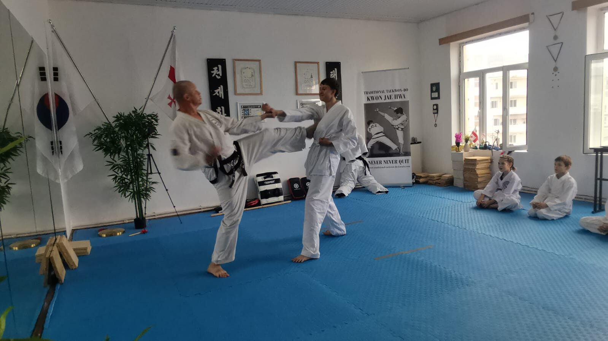
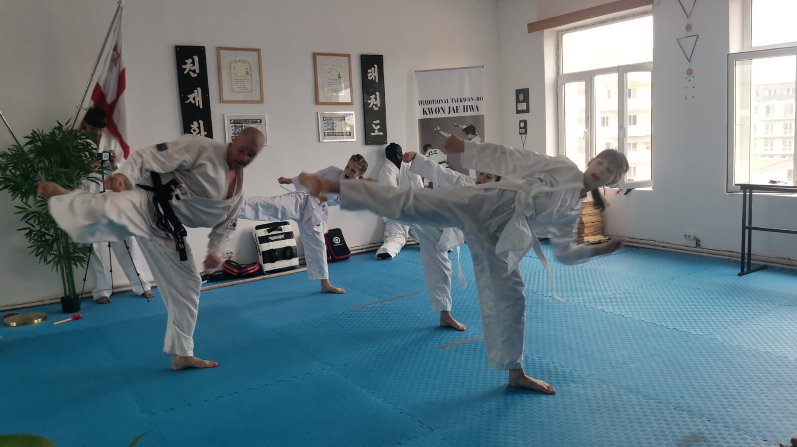
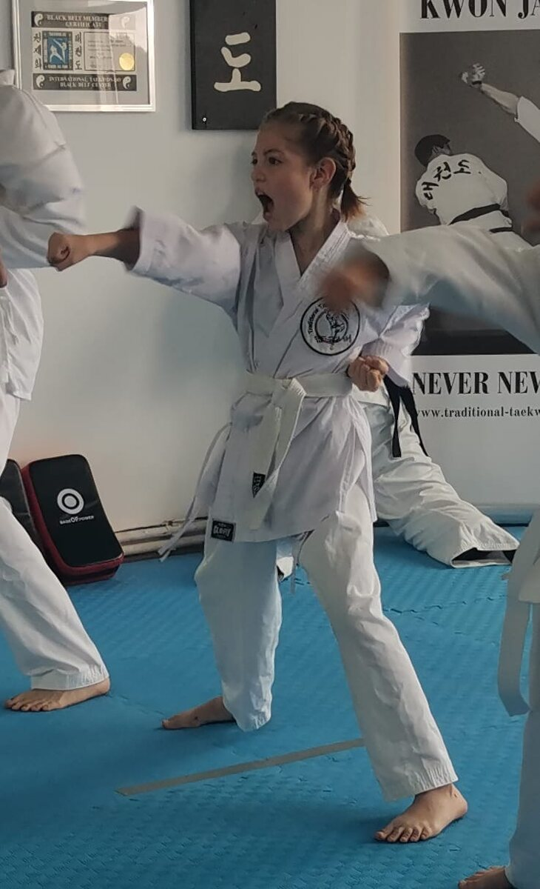
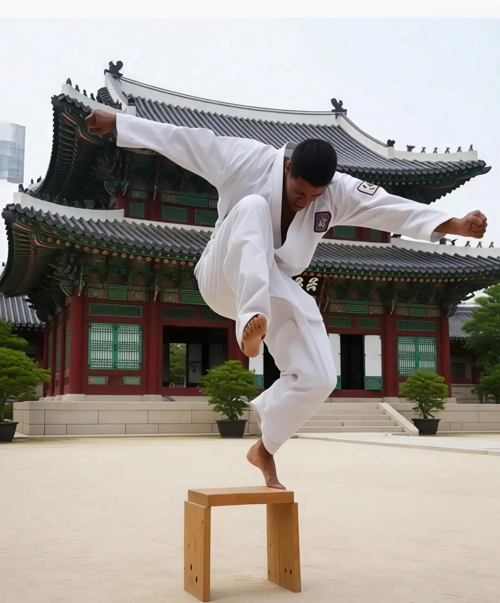
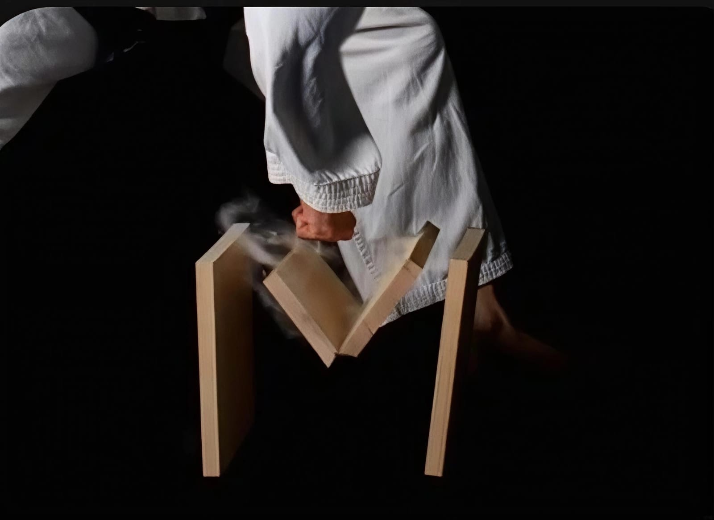
Две культуры · Один дух
Традиционное тхэквондо объединяет людей через уважение, движение и общую цель — становиться лучшей версией себя.
Языки тренировок: английский и русский
Отзывы Google
Читайте независимые отзывы о Traditional Taekwon-Do Kutaisi непосредственно в Google.
Отзывы Google и актуальная информация о школе
Начните свой путь
Познакомьтесь с нами, попробуйте тренировку и узнайте, подходит ли традиционное тхэквондо вам или вашему ребёнку.